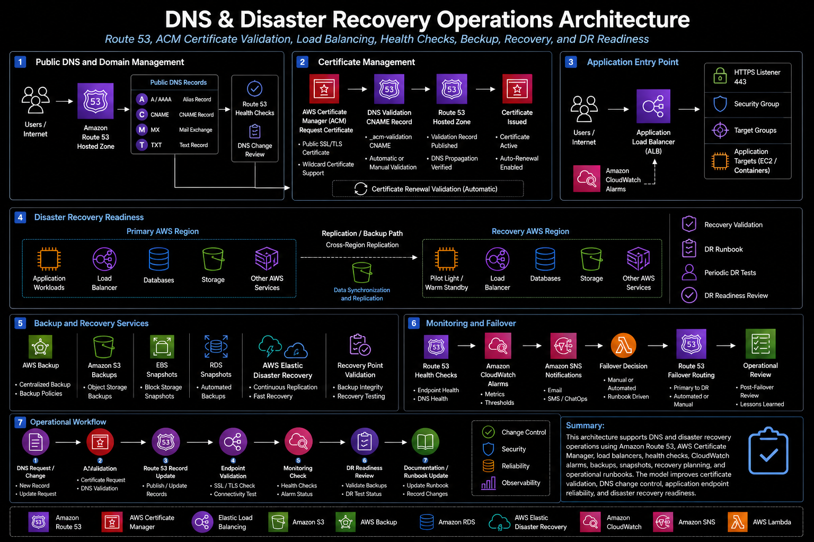

Project Documentation
DNS & Disaster Recovery Operations
This case study documents how I supported DNS, certificate validation, disaster recovery operations, health checks, and cloud recovery workflows.
Overview
The project focused on operational support for DNS, certificates, recovery readiness, health checks, and infrastructure components that support application availability.
Problem
DNS and recovery workflows require careful validation because small mistakes can affect application availability, certificate issuance, routing, and recovery readiness.
Architecture
The architecture used Route 53 hosted zones, ACM validation records, health checks, DRS-related recovery components, and operational monitoring.

What I Did
I supported DNS record changes, certificate validation, health check review, disaster recovery support tasks, and operational troubleshooting.
Implementation Approach
1. Reviewed the current state
I reviewed the existing process, access model, services, operational gaps, and areas where manual work created risk or inconsistency.
2. Mapped the technical workflow
I documented how requests, services, automation, monitoring, and operational follow-up moved through the environment.
3. Implemented or supported the changes
I worked with the relevant AWS services, scripts, IAM controls, monitoring tools, and deployment workflows needed to support the project.
4. Validated the result
I reviewed service behavior, logs, configuration state, security findings, access behavior, and operational output to confirm the work was successful.
5. Documented the outcome
I captured the architecture, implementation flow, operational value, and follow-up considerations so the work could be reviewed and reused.
Outcome
The work improved reliability around DNS operations, certificate workflows, and recovery support activities.